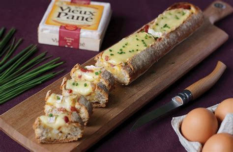
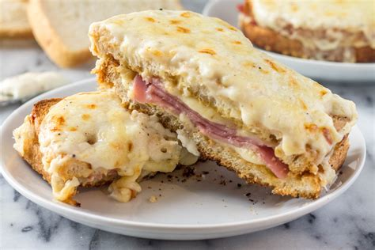
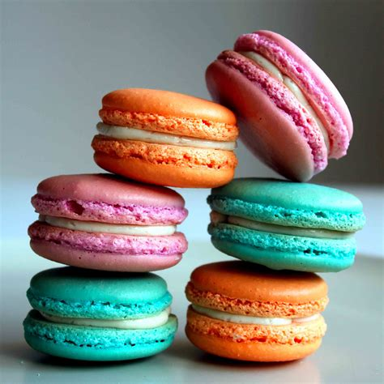
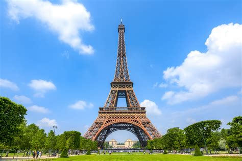
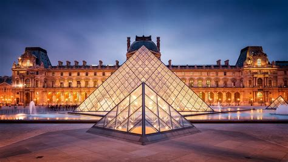
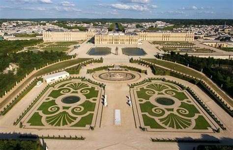
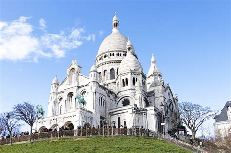
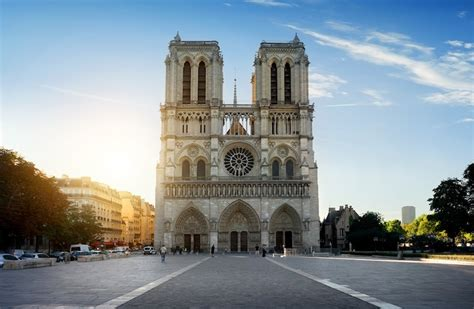

Île-de-France
Vue d'ensemble
Île-de-France, située dans le nord-centre de la France, est la région la plus peuplée et la plus économiquement importante. Elle abrite la capitale du pays, Paris, ainsi qu'une concentration d'institutions culturelles, de monuments historiques et d'entreprises internationales. Connue comme le « moteur » de la France, elle combine dynamisme urbain et héritage royal.
Informations Rapides
- Capitale: Paris
- Langue régionale: Français
- Population: ~12 millions
- Célèbre pour: Tour Eiffel, Musée du Louvre, Château de Versailles, mode, cuisine
- Le saviez-vous? Bien que ce soit la plus petite région en superficie, elle génère près de 30 % du PIB français !
Plats Populaires
Baguette & Fromage

Croque Monsieur

Macarons

Canard à l'Orange
Monuments célèbres
Tour Eiffel

Musée du Louvre

Château de Versailles

Montmartre & Sacré-Cœur

Notre-Dame de Paris

Meilleure période pour visiter
Le printemps (avril–juin) et l’automne (septembre–octobre) sont les périodes les plus agréables pour explorer Paris et les environs, avec un temps doux et moins de foule. L’hiver est festif mais froid, tandis que l’été est chaud et très touristique.
Symboles régionaux
- Drapeau :
- Logo :